Bem-Te-Vi
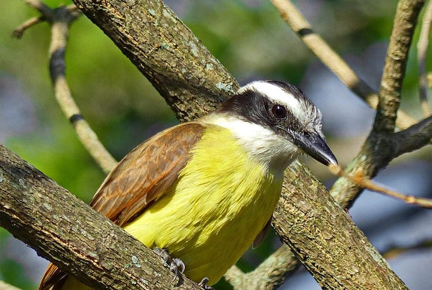
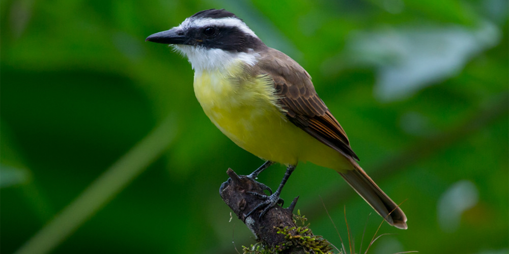
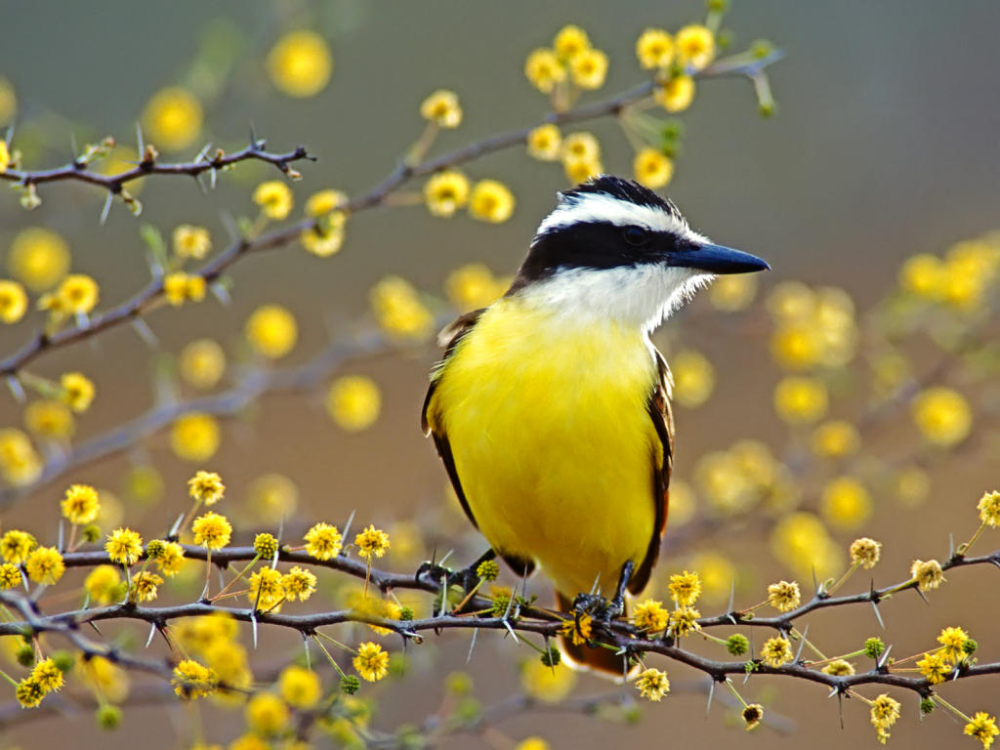
 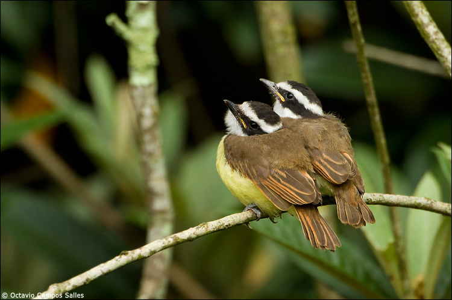
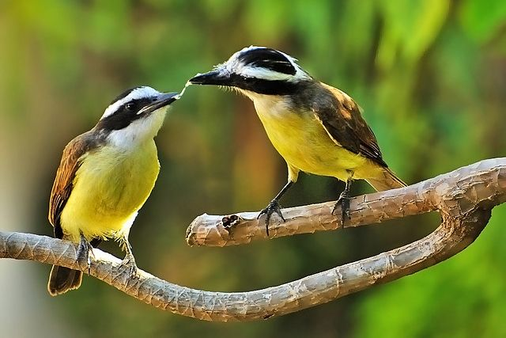
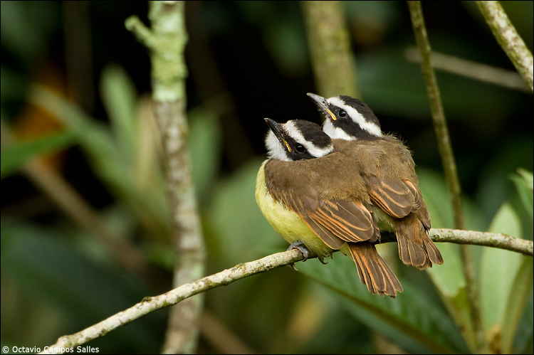
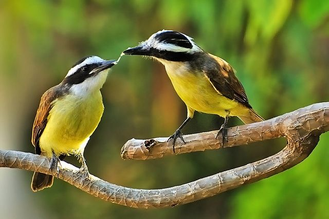
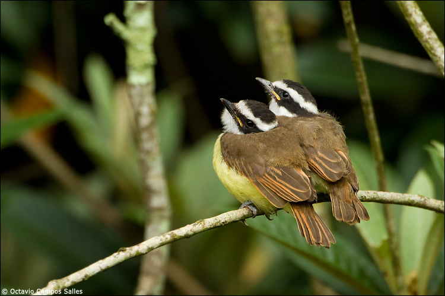
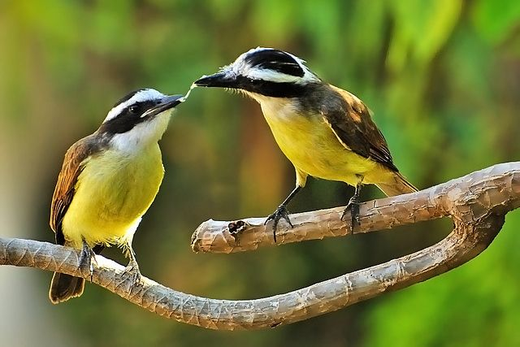
INFORMAÇÕES SOBRE O ANIMAL
- Nome Científico: Pitangus sulphuratus
(Linnaeus, 1766) - Nomes Populares: Para os indígenas: pituã, pitaguá ou puintaguá.
- Atualmente a espécie não corre risco de extinção.
Classificação Biológica
- Dominio: Eukaryota
- Reino: Animalia
- Filo: Chordata
- Classe Aves
- Ordem: Passeriformes
- Família: Tyrannidae
- Subfamília: Trochilinae
- Espécie: P. sulphuratus
Nutrição Geral e Hábitos Alimentares
- Tipo de Nutrição: Heterotrófico
- Insetos: O bem-te-vi é insetívoro, podendo comer centenas de insetos em apenas um dia, como mosquitos, besouros e lagartas.
- Frutas e sementes: Ele também se alimenta de frutas e sementes, contribuindo para a dispersão de sementes em áreas de cerrado.
- Peixes e crustáceos: Em ambientes aquáticos, o bem-te-vi pode se alimentar de peixes e crustáceos.
- Girinos: Em lagos de menor profundidade, ele pode se alimentar de girinos.
- Pequenos répteis e mamíferos: O bem-te-vi também é conhecido por comer pequenos répteis, como lagartos e sapos, e pequenos mamíferos, como ratos e camundongos.
- Ovos: Ele também pode se alimentar de ovos.
- Além disso, o bem-te-vi tem a habilidade de encontrar novas formas de alimento, chegando a se alimentar da ração de felinos domésticos, como gatos e cães. Ele também é um grande predador de abelhas, o que pode causar problemas para a apicultura.
Morfologia Básica do Corpo
- Tamanho e Peso: O bem-te-vi mede entre 22 a 25 centímetros de comprimento e pesa aproximadamente 52-68 gramas.
- Corpo: Tem o dorso pardo e a barriga de um amarelo vivo.
- Cabeça: Possui uma listra (sobrancelha) branca no alto da cabeça, acima dos olhos.
- Cauda: A cauda é preta.
- Bico: O bico é preto, achatado, longo, resistente e um pouco encurvado.
- Garganta: A garganta (zona logo abaixo do bico) é de cor branca.
- Não há dimorfismo sexual nesta espécie, ou seja, tanto macho quanto fêmea têm as mesmas características físicas.
Aspectos relacionados a camuflagem
- O bem-te-vi (Pitangus sulphuratus) não é uma ave que depende fortemente de camuflagem, mas suas cores e padrões podem ajudar a se misturar em certos ambientes. Aqui estão alguns aspectos que podem contribuir para a camuflagem:
- Cor do Corpo: O dorso pardo do bem-te-vi pode ajudar a se misturar com o tronco das árvores e o solo, enquanto a barriga amarela pode se misturar com as folhas e frutas das árvores.
- Cor da Cabeça: A listra branca acima dos olhos (sobrancelha) pode ajudar a confundir predadores ou presas, quebrando a silhueta da cabeça da ave.
- Cor da Cauda: A cauda preta pode se misturar com sombras ou áreas escuras.
- No entanto, é importante notar que o bem-te-vi é uma ave bastante visível e vocal, muitas vezes chamando a atenção para si mesma com seu canto alto e distintivo. Isso sugere que a camuflagem não é uma estratégia de sobrevivência primária para esta espécie. Em vez disso, o bem-te-vi pode confiar mais em sua agilidade e comportamento agressivo para evitar predadores.
Comportamento geral e Sobrevivência
- Comportamento Geral
- O bem-te-vi é uma ave bastante ativa e curiosa.
- Ele é muito territorialista e costuma defender seu território com muita garra.
- É uma espécie bastante vocal, emitindo diversos sons diferentes para se comunicar com outros pássaros e também para alertar sobre possíveis perigos.
- Ele pode ser encontrado tanto sozinho quanto em grupos de 2 a 4 bem-te-vis.
- Estratégias de Caça
- O bem-te-vi é conhecido por sua agilidade, o que lhe permite capturar insetos em pleno voo.
- Ele também é um grande caçador de lagartas e outros insetos que podem prejudicar as plantas.
- No litoral, ele captura pequenos crustáceos nas pedras.
- No cerrado, ele consome cupins alados quando estes saem para a reprodução.
- Estratégias de Defesa
- O bem-te-vi é conhecido por seu comportamento agressivo contra possíveis ameaças, tais como gaviões, urubus e outros pássaros que invadem seu território.
- Apesar de sua aparente fragilidade, o bem-te-vi não se intimida e ameaça vigorosamente outros pássaros maiores, como o gavião e o urubu.
- Estratégias de Sobrevivência
- O bem-te-vi é uma ave bastante adaptável, podendo viver tanto em áreas urbanas quanto em campos.
- Ele tem uma alimentação bastante variada, o que lhe permite se adaptar a diferentes ambientes e fontes de alimento.
- Sua capacidade de emitir diversos sons diferentes ajuda a comunicar-se com outros pássaros e alertar sobre possíveis perigos, contribuindo para sua sobrevivência.
- Além disso, o bem-te-vi é uma ave bastante visível e vocal, muitas vezes chamando a atenção para si mesma com seu canto alto e distintivo. Isso sugere que a camuflagem não é uma estratégia de sobrevivência primária para esta espécie. Em vez disso, o bem-te-vi pode confiar mais em sua agilidade e comportamento agressivo para evitar predadores.
- Predadores da Espécie
- Os principais predadores do Bem-Te-Vi são Serpentes e Aves de Rapina.
Ocorrência no Brasil
- Biomas de Ocorrência no Brasil
- O Bem-te-vi é uma ave típica do bioma Cerrado brasileiro, mas sua presença é notada em quase todos os biomas do país. O Brasil possui seis grandes biomas terrestres: Amazônia, Caatinga, Cerrado, Mata Atlântica, Pampa e Pantanal.
- Distribuição no Território Nacional
- A distribuição geográfica do Bem-te-vi se estende predominantemente do sul do México à Argentina, uma área estimada em 16.000.000 quilômetros quadrados. No Brasil, ele é encontrado em todo o território.
- Mapa de Ocorrência no Brasil 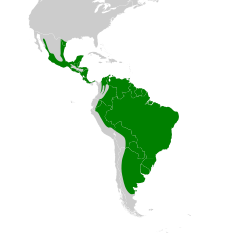
Aspectos Reprodutivos
- Ninho: O ninho do Bem-te-vi é esférico e feito a partir de pequenas ramas, capim, restos de papel, fios e plástico. O casal constrói um ninho redondo com cerca de 25 cm de diâmetro. Geralmente escolhem árvores altas e sem folhas, cavidades nos postes de energia elétrica ou telhados de barro para construir o ninho.
- Ovos: A fêmea do Bem-te-vi, também popularmente conhecida como siririca, pode botar de 2 a 4 ovos durante o período reprodutivo.
- Periodo reprodutivo: O período reprodutivo do Bem-te-vi pode ser de julho a novembro. Em algumas fontes, é mencionado que a época da reprodução do Bem-te-vi é de agosto a dezembro.
- Cuidado Parental: Ambos os pais participam da incubação e cuidados com os filhotes.
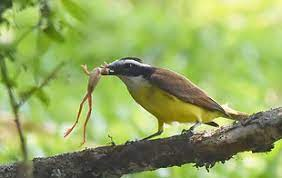
Bem-te-vi se Alimentando.